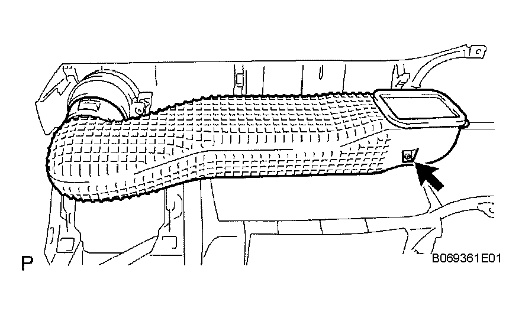
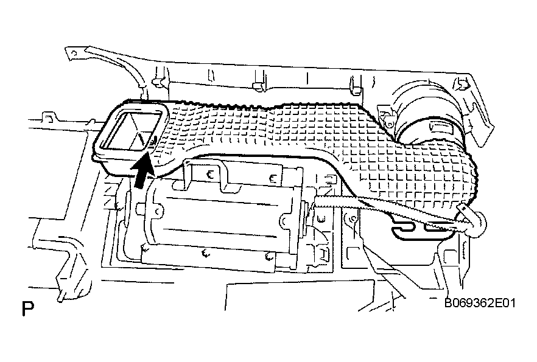
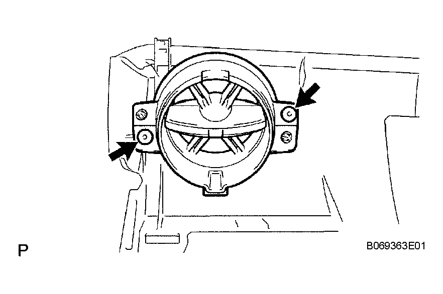

Upper Instrument Panel: Disassembly
- REMOVE NO. 1 HEATER TO REGISTER DUCT
- Using nippers, cut off the ultrasonic welding portion as shown in the illustration to remove the No. 1 heater to register duct from the instrument panel.

Courtesy of © TOYOTA, LICENSE AGREEMENT TMS1002
- Using nippers, cut off the ultrasonic welding portion as shown in the illustration to remove the No. 1 heater to register duct from the instrument panel.
- REMOVE NO. 3 HEATER TO REGISTER DUCT
- Using nippers, cut off the ultrasonic welding portion as shown in the illustration to remove the No. 3 heater to register duct from the instrument panel.

Courtesy of © TOYOTA, LICENSE AGREEMENT TMS1002
- Using nippers, cut off the ultrasonic welding portion as shown in the illustration to remove the No. 3 heater to register duct from the instrument panel.
- REMOVE NO. 1 INSTRUMENT PANEL REGISTER ASSEMBLY
- Using nippers, cut off the ultrasonic welding portion as shown in the illustration to remove the No. 1 instrument panel register from the instrument panel.

Courtesy of © TOYOTA, LICENSE AGREEMENT TMS1002
- Using nippers, cut off the ultrasonic welding portion as shown in the illustration to remove the No. 1 instrument panel register from the instrument panel.
- REMOVE INSTRUMENT CLUSTER FINISH PANEL END
- Remove the screw.
- Disengage the 2 claws and remove the instrument cluster finish panel end.
- REMOVE FRONT PASSENGER AIRBAG ASSEMBLY (See REMOVAL )
- REMOVE NO. 1 INSTRUMENT PANEL CUSHION
- Remove the No. 1 instrument panel cushion from the instrument panel sub-assembly.